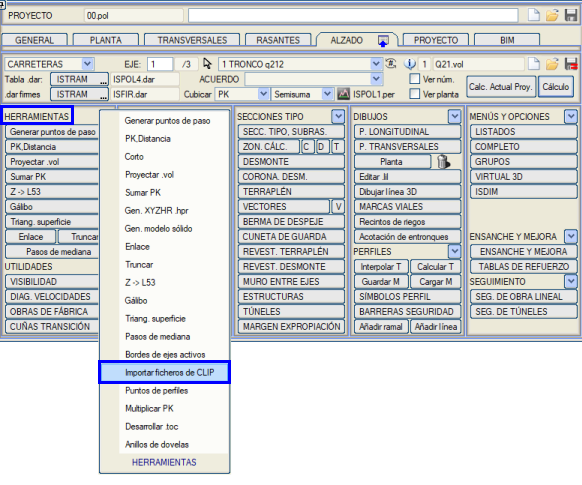
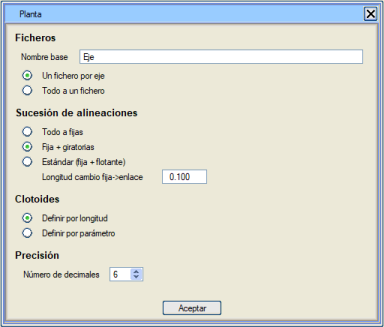
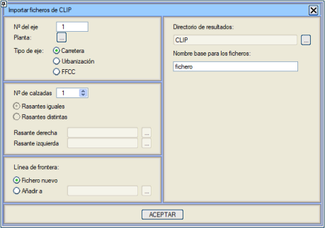
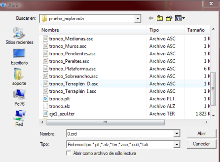

| |
|
CLIP DOSYALARINI İÇE AKTAR
|
İçe aktarıcıya erişmek için ENKESİT (ALZADO) menüsünde, ENKESİT ARAÇLARI'nda konumlanmış olmanız gerekir ve bunun için programın güncel bir sürümüne sahip olmalısınız: 
Aşağıda Clip programından içe aktardığımız dosyalar açıklanmaktadır:
Karayolları tip enkesit .asc dosyaları:
 Demiryolu verilerinin okunmasına da izin verilir. Demiryolu verilerinin okunmasına da izin verilir.İçe aktarılacak her bir güzergahın dosyalarını ayrı klasörlerde saklamanız veya hepsi aynı klasördeyse her bir güzergah için farklı adlara sahip olmaları önerilir. kutucuğuna tıklandığında, CLIP'in .plt dosyalarından oluşturulan .cej dosyalarının parametrelerini yapılandırmak için bir diyalog kutusu açılır. Butona tıklandığında, .cej dosyaları için tipik yapılandırma ekranı gösterilir. Bunlar, dönüştürücüler ağacında, LandXML, IFC4x1 Alignment1.1 vb. içe aktarıcısında gösterilen aynı parametrelerdir. 
Ayrıca, sınır çizgilerinin yeni bir dosyada mı oluşturulacağını yoksa mevcut bir dosyaya mı ekleneceğini de belirtebiliriz, ikinci durumda hangi dosyaya ekleneceğini belirtmemiz gerekir. Varsayılan sonuç dizini “CLIP” adlı klasördür ancak kullanıcı tarafından belirlenen herhangi bir başka klasör de olabilir, ayrıca dosyalar için temel ad da yapılandırılabilir. 
Ardından, içe aktarmak istediğimiz tüm dosyaları seçmemiz ve Aç'a basmamız gereken Windows dosya seçicisi gösterilir. Not: Birden fazla Tesviye Yüzeyi dosyası varsa, kullanıcı bu türdeki dosyaları sırayla seçmelidir. 
Bu noktada, farklı Clip dosyalarının Istram/Ispol dosyalarına içe aktarılması tamamlanmış olur. İçe aktarılacak dosyaların seçildiği çalışma klasörü içinde, oluşturulan çıktı dosyalarıyla birlikte “CLIP” adlı bir klasör oluşturulur. Elde edilen dosyalar şunlardır: Plan dosyası “cikti.cej”. - Enkesit dosyası “cikti.per”. - Kırmızı kot dosyası “cikti.ras”. - Genişlik kanunu dosyası “cikti.anc”. - Yardımcı taşıt yolları dosyası “cikti.aux”. - Görüş mesafesi palyeleri dosyası “cikti.bdj”. - Yarma şev tacı dosyası “cikti.crd”. - Dever eksenleri dosyası “cikti.egi”. - Sınır çizgileri dosyası “cikti.lfr”. - Eksantriklik ve orta refüj dosyası “cikti.med”. - Dever kanunu dosyası “cikti.prl”. - Bağımsız sondajlar dosyası “cikti.sdi”. - Seçilmiş malzeme dosyası “cikti.ssl”. Bu dosyalar, ilgili güzergahın Boykesitine otomatik olarak yüklenir. Ayrıca, aşağıdaki menülerin verileri doğrudan belleğe oluşturulur ve yüklenir: - Tip kesit, subrasante. - Hesaplama bölgeleri. - H, Y, D - Yarma - Dolgu Böylece, doğrudan o güzergah için yukarıda belirtilen tüm bu verileri içeren bir .vol dosyası kaydedebiliriz. İçe aktarılacak diğer güzergahlar için de aynı şekilde hareket edilecektir. Lütfen içe aktarılacak dosyalarla ilgili herhangi bir sorununuz olursa, Clip programının yukarıda açıklanan dosyalarını içeren klasörü bize gönderin, çözmeye çalışalım. |